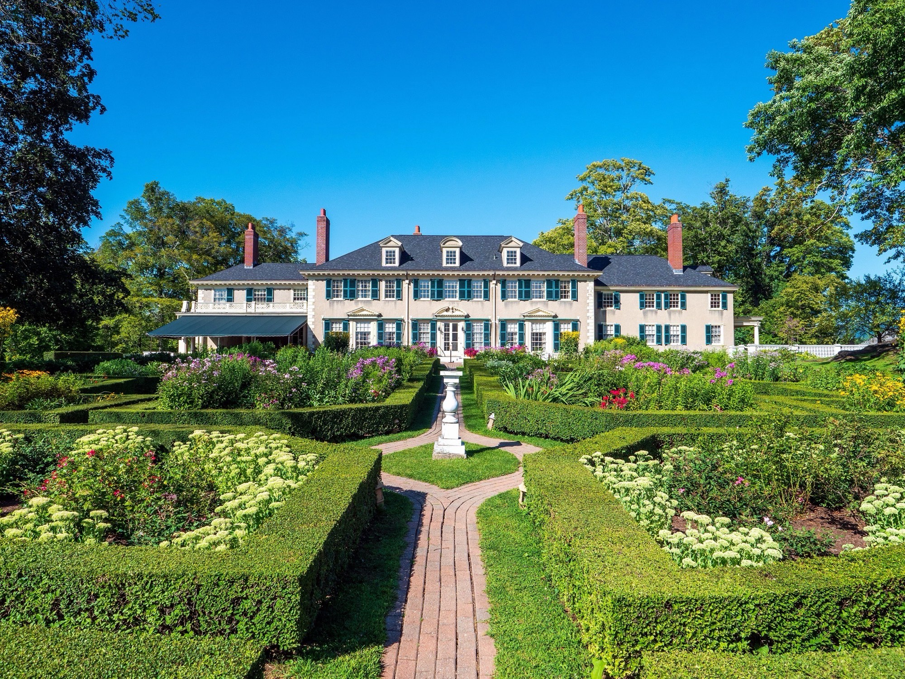

Audio Visual Services in Manchester, Vermont
Manchester's Local AV Production Team
Manchester, Vermont is where Equinox Audio Visuals was founded, and it remains the heart of everything we do. Nestled in the Green Mountains at the base of Mount Equinox, this town draws couples, corporate planners, and event organizers from across the Northeast—and we've had the privilege of producing events at nearly every venue in the area. When you work with us in Manchester, you're working with a team that knows the local landscape better than anyone.
From the grand ballrooms of The Equinox Resort to the historic elegance of Hildene – The Lincoln Family Home, Manchester offers event spaces that demand a thoughtful, experienced production partner. The Kimpton Taconic Hotel brings a modern boutique sensibility, while The Inn at Manchester offers intimate charm for smaller celebrations. Each of these venues has its own acoustic characteristics, power infrastructure, and logistical considerations—and we've mapped them all. That institutional knowledge translates directly into smoother load-ins, better sound, and fewer surprises on event day.
Hildene lawn ceremonies, corporate days at The Equinox, chamber and nonprofit galas — this is our home market. Local means no travel surcharge theater, no mystery crew, and a team that already knows the loading docks.